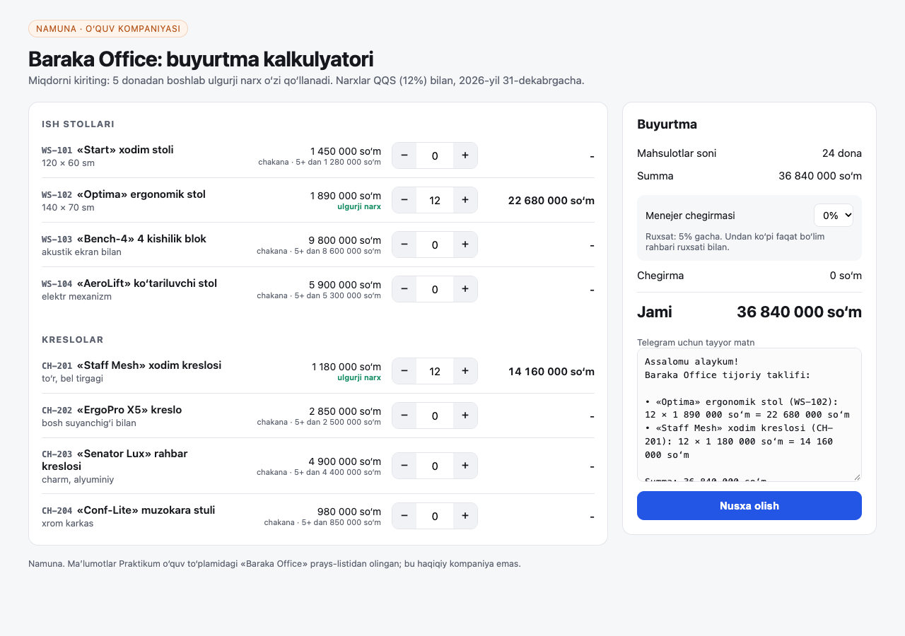

Birinchi qurilish: qanday ishlatish
Varaq: prompt-sheet.html (ekranda, nusxa olish tugmalari bilan) yoki prompt-sheet.pdf (bosma).
Natija: o‘z biznesingiz uchun narx kalkulyatori yoki bir sahifalik taklif, Claude chatida ishlaydigan sahifa (artefakt).
Boshlashdan oldin kerak
- Claude Pro (tayyorgarlik darsida ulangan) va claude.ai brauzerda ochiq.
- Settings → Capabilities bo‘limida «Code execution and file creation» yoqilgan.
- 3-5 ta mahsulot yoki xizmat va ularning hozirgi narxi. Qayerdan: amaldagi prays-listingiz, 1C yoki Excel’dagi narxlar jadvali; bilmasangiz, savdo bo‘limi boshlig‘idan so‘rang.
- Narx qoidasi, agar bo‘lsa: ulgurji narx necha donadan, chegirma qachon beriladi, yetkazish narxi.
Qadamlar
- Varaqdan biznes turingizga eng yaqin promptni toping (8 ta tur va bo‘sh shablon bor).
- «Nusxa olish»ni bosing va Claude chatiga qo‘ying.
- Kvadrat qavsdagi har bir joyni o‘z ma’lumotingiz bilan almashtiring.
- Yuboring va natijani sinang: miqdorni o‘zgartiring, jami to‘g‘ri chiqyaptimi?
- Chatda bitta narsani o‘zgartirishni so‘rang, keyin yana ikkitasini.
Har bir joy nima
| Joy | Nima yoziladi | Misol |
|---|---|---|
| [biznes turi] | Nima sotasiz yoki ishlab chiqarasiz | ofis mebeli |
| [mahsulot], [narx] | Prays-listdagi nom va so‘mdagi narx | «Optima» stol, 1 890 000 |
| [chegirma qoidasi] | Qachon va qancha chegirma | 20 mln so‘mdan oshsa, 5% gacha |
| [ulgurji narx] | Necha donadan arzonroq narx | 5 donadan 1 890 000 |
| Telegram matni | Mijozga yuboriladigan tayyor xabar | Claude o‘zi yozadi |
Namuna: Baraka Office
7-prompt (ishlab chiqarish) Baraka Office prays-listi bilan to‘ldirilgan:
Men Toshkentda ofis mebeli ishlab chiqaraman. Dilerlar va korporativ mijozlar uchun buyurtma kalkulyatori kerak, uni artefakt qilib yasab ber. Mahsulotlar (kodi, nomi, chakana narx 1-4 dona, ulgurji narx 5+ dona, so‘mda): - WS-101, «Start» xodim stoli, 1 450 000, 1 280 000 - WS-102, «Optima» ergonomik stol, 2 150 000, 1 890 000 - WS-103, «Bench-4» 4 kishilik blok, 9 800 000, 8 600 000 - WS-104, «AeroLift» ko‘tariluvchi stol, 5 900 000, 5 300 000 - CH-201, «Staff Mesh» xodim kreslosi, 1 350 000, 1 180 000 - CH-202, «ErgoPro X5» kreslo, 2 850 000, 2 500 000 - CH-203, «Senator Lux» rahbar kreslosi, 4 900 000, 4 400 000 - CH-204, «Conf-Lite» muzokara stuli, 980 000, 850 000 Qoidalar: 5 donadan boshlab ulgurji narx o‘zi qo‘llansin. Buyurtma 20 000 000 so‘mdan oshsa, menejer 5% gacha chegirma tanlay olsin, undan kam bo‘lsa chegirma yopiq tursin. Mijoz miqdorlarni kiritsin; har bir qator, chegirma va jami chiqsin. Pastda Telegram uchun tijoriy taklif matni va «Nusxa olish» tugmasi bo‘lsin. Barcha yozuvlar o‘zbek tilida bo‘lsin.
Natija (namuna, examples/namuna-kalkulyator.html):

Natijani qanday tekshirish:
- «Optima»dan 12 dona: narx o‘zi 1 890 000 ga tushdi (ulgurji), qator 12 × 1 890 000 = 22 680 000.
- Jami 20 mln dan oshgach, «Menejer chegirmasi» ochildi; undan kam bo‘lsa yopiq: qoida ishlayapti.
- Telegram matnidagi summa jami bilan bir xil.
Boshqa ikkita namuna: examples/namuna-banket.html (restoran, 5-prompt) va examples/namuna-taklif.html (o‘quv markazi, 4-prompt).
Yomon misol va uning to‘g‘ri varianti
Yomon:
Menga kalkulyator qilib ber.
Nima noto‘g‘ri: Claude sizning mahsulotingizni, narxingizni va qoidangizni bilmaydi. U umumiy namuna yasaydi yoki savol beradi; natija sizning biznesingizda ishlamaydi.
To‘g‘ri: varaqdagi promptni oling va har bir kvadrat qavsni to‘ldiring (yuqoridagi namunadek). Nima yozishni bilmasangiz, «Qotib qoldingizmi?» promptini yuboring: Claude avval 3 ta savol beradi, keyin quradi.
Ko‘p uchraydigan xatolar
- Mijoz ismi, telefoni yoki hisob raqamini yozish: faqat mahsulot va narx kerak.
- Narxni «1.250.000» yoki «1,25 mln» kabi aralash yozish: bitta ko‘rinishda yozing, masalan «1 250 000».
- Bir vaqtda beshta o‘zgarish so‘rash: har safar bittasini so‘rang.
- Artefakt chiqmasa, sozlamani tekshirmaslik: Settings → Capabilities → «Code execution and file creation».
Tayyor
- Kalkulyator yoki taklif sizning real mahsulot va narxlaringiz bilan ishlaydi.
- Chat orqali kamida bitta narsa o‘zgartirilgan.